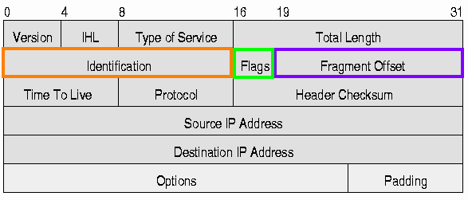
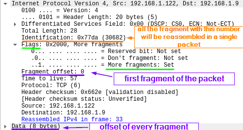
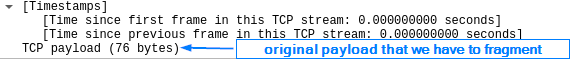

-f/--mtu
fragment packets
Fragmentation is the process of splitting a single packet into smaller ones.
This can
disable the ability of some firewall and IDS systems to either apply their packet filtering rules or, to process all
the fragments. In other words, they may inspect the single fragment but not the whole packet.
CAUTION: modern
IDS’s are able to rebuild the fragmented packets therefore, often times rendering this technique ineffective.
nmap -sS -Pn -n --disable-arp-ping -f [TargetIP]
-sS → SYN scan
-f → fragment the packets
Fragmentation does not work with
every type of scanFor example, it does not work with these:
◇ -sT (TCP connect() scan)
◇ -sV ( Version Detection )
Fields of IPv4 packets•
Identification - this value identifies a group of fragments. It's what tells the
reassembling device which fragments make up the original packet.
•
Flags -
MF bit - More Fragments means that there are additional packets coming in after this one. It is set to 1 in all; but
the last fragment is set to 0
•
Fragment offset - The fragment offset field
is measured in units of
eight-byte blocks. The value for the first
fragment will be 0
It is 13 bits long and specifies the offset of a particular fragment relative to the
beginning of the original unfragmented IP datagram.
This offset is the amount of bytes that can contain a
fragment of a packet
◇
-f → the fragmentation offset is set to 8 by default.
◇
--mtu → instead of -f to specify a custom offset size. It is important to know that the offset must
be a multiple of eight.
 example  How many packets for a payload of N length?If we have a paylod of N length (we can
simulate it in Nmap with the option --data-length N) to split it in fragment payload of length 8 we can use the
option -f
bibliography:
https://en.wikipedia.org/wiki/IPv4https://nmap.org/book/man-bypass-firewalls-ids.html